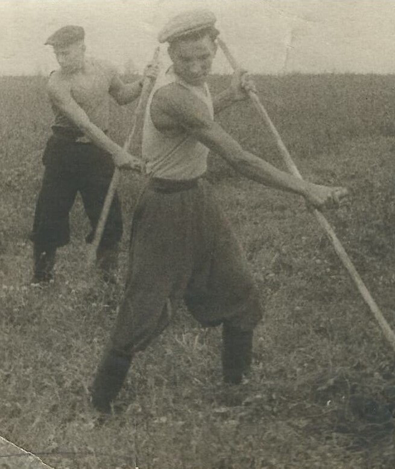
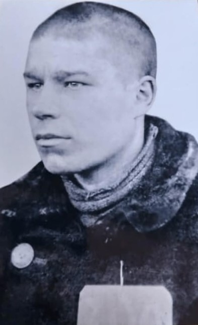

Бывшие несовершеннолетние узники концлагерей г. Ленинска - Кузнецкого

Паташов Анатолий Иванович
Акулич Бронислава Ивановна
Анисимова Валентина Григорьевна

Лобода Иван Александрович
Матвеева Надежда Андреевна
Пешков Иван Андреевич
Старченко Владимир Николаевич
Уханова Зоя Михайловна